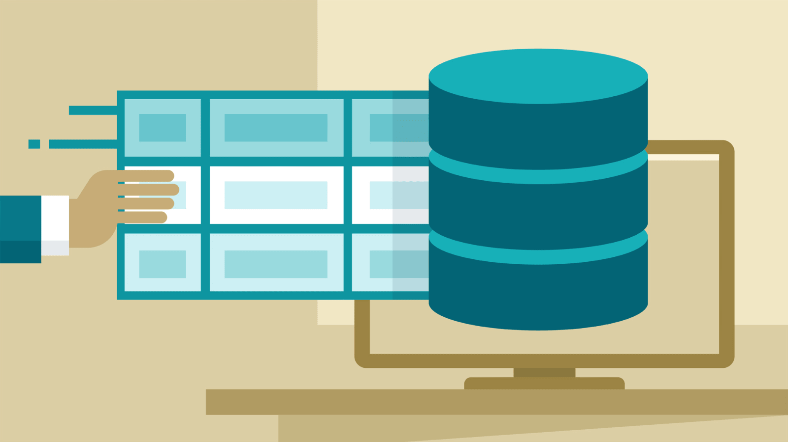
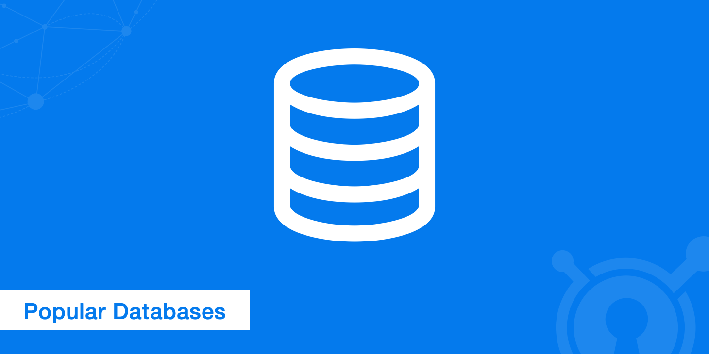

Reasoning about which database to choose
'What is a database?'
A database is an ordered set of structured information or data that is usually stored electronically in a computer system. A database is usually managed by a database management system (DBMS).
7 basic database types
- Relational databases | Examples - MySQL, Oracle DB, PostgreSQL...
- Resident databases
- Searchable databases
- Databases with broad columns
- Columnar databases
- Document oriented databases
- Graph databases
What will the article talk about?
In this article I will discuss some typical and not-so-typical choices of databases, or to be more precise, approaches to the choice. When it is necessary to stop at what most people use, and when it is possible to think about the new and unexplored. I will describe DBMS MySQL, PostgreSQL, MongoDB, Redis, CouchDB/PouchDB and mention Aerospike with Tarantool, a couple of others - but at some points the specific choice is not that crucial. You have to understand that it is better to design data structure correctly from the beginning than to choose DBMS and then try to figure out what to actually store in it.
So, let's begin.

MySQL / MariaDB
People's DBMS or "must have", available on almost any hosting. It is easy to install and works normally without any special settings. With the proper approach can be flexibly adjusted to your needs. But there is a pitfall, in some cases, it will be the bottleneck and your project will slow down, no matter how you tune the database and data structure.
MySQL is for you if:
- - you are a conservative and do not want to go into the configuration of the DBMS, just put it and it works (or on a hosting using what they give);
- - You're a conservative, so you think in a structural, tabular way. MySQL can do it;
- - any programming language, framework, CMS, CMF and so on - there is integration with MySQL.
- - you are a beginner and you need a DBMS to manage structured data, preferably small (up to 1 - 2 gigabytes).
The minuses? There are and you should choose another DBMS if you see an
important one.
- - mediocre performance. Really low, no matter how you tune it, even a cluster won't help you much (you will have to tune it, of course, but you'll see how to play with diamonds). I'm talking about figures of about 20 MBytes/sec. From personal experience, with such a stream MySQL on SSD drives reached its limit, could not cope and slowed down, and the service was adjusted over several years, were used optimal settings for the load. Out of the box configuration, I think it will be even less of a bar to have;
- - Changing the data structure can be quite time consuming, especially with a large number of relationships between data in different tables, and even a simple addition of fields;
- - Sensitivity to server instability. This especially affects when using XtraDB from Percona. If you end MySQL incorrectly, you can crash tables and databases so badly that you can only recover from a full backup, of course, if you do them regularly. And believe me, this always happens at the most unexpected moment. There are tools that can help you get back up and running in simple situations, but they are not a panacea. The latest and up-to-date versions actively fight this and claim much better stability and reliability.
PostgreSQL
A kind of mastodon, a very old and competent DBMS. It's almost like
MySQL, only better. But you have to know how to prepare and configure
it. According to many people it is a very stable DBMS, it is almost
impossible to crash tables like MySQL. And this may be a deciding factor
for you when choosing.
PostgreSQL is for you if:
- - you're a conservative (I know I'm repeating myself, but I am) and you need reliable storage;
- - you or your professional knows how to set up and use PostgreSQL;
- - you need well-structured data, but with some flexibility in the data schema (JSON/BJSON);
- - using third-party libraries to easily and conveniently expand into clusters and do table sharding. And it all really works.
And here's not really describe the disadvantages ... To be fair, especially the practice did not have, mostly judging by the stories of friends:
- - The need for experience with this DBMS to prepare it well. Otherwise it is better to take MySQL or read on;
- - the default authorization system can be difficult to use or configure, not everyone likes it, some even very experienced developers still do not fully understand how it works there.
MongoDB
Oh, how many copies still break - SQL or NoSQL... But still in some cases MongoDB cope much better than MySQL or PostgreSQL. For example, the real case I was a witness to - collecting and processing hosting statistics (CPU load, i/o, memory, etc.) - MySQL failed from the word go. MongoDB managed without any problems. The database size reaches 200-300 GBytes, the data flow reaches 100 MBytes/sec or more. It is very impressive, in my opinion.
MongoDB is for you if:
- - You do not have a clear, pre-described data structure, or you assume that the composition of the data may then change significantly (of course it can be done in SQL, but you have to think in terms of other concepts, you can change it, but the question is how labor-intensive it will be);
- - You have planned quite a serious amount of data (tens or even hundreds of GB), to determine this even at the stage of TOR can be;
- - You just want NoSQL, as it is fashionable;
- - easy to install and try, it works fine without much configuration. And if you go deeper, explore, you can configure a lot of things.
There are also minuses.
- - mediocre performance. It's really low, no matter how you tune it up. Even the cluster won't help much (you still need to tune it up, yeah, that's a lot of tambourine). We are talking about figures of about 20 MBytes/sec. From personal experience, with such a stream MySQL on SSD drives reached its limit, could not cope and slowed down, and the service was adjusted over several years, were used optimal settings for the load. Out of the box configuration, I think it will be even less of a bar to have;
- - Changing the data structure can be quite time consuming, especially with a large number of relationships between data in different tables, and even a simple addition of fields;
- - Sensitivity to server instability. This especially affects when using XtraDB from Percona. If you end MySQL incorrectly, you can crash tables and databases so badly that you can only recover from a full backup, of course, if you do them regularly. And believe me, this always happens at the most unexpected moment. There are tools that can help you get back up and running in simple situations, but they are not a panacea. The latest and up-to-date versions actively fight this and claim much better stability and reliability.
Redis
This DBMS is most often used as a caching layer to handle data from another, slower DBMS. A better replacement for memcached, if that tells you anything. Rarely, but still can be used as a database on its own for data. That said, Redis can handle different types of data, including lists, queues, can Pub/Sub, and is also very easy to work with TTL (key lifetime). It works in memory, is very fast, can save data on disk, and with support for overwrite (much less load on disk) and load it on startup. Almost a fairy tale.
Redis is for you if:
- - data volume is small and a very simple scheme that fits into the "key=value" pattern;
- - simple implementation of Master - Slave replication. Really easy to configure, just add instructions to the master in the server configuration, run Redis Server, and data is already replicated. Although it should probably be clarified that it is unlikely that flexible (partial) replication can be configured;
- - Pub/Sub (queues) are needed. To be fair, there are separate Pub/Sub systems that implement other patterns in addition to this one. Redis implements this quite elegantly and easily, you may not need others;
- - you need the cache for a slower DBMS, or just want to not have to worry about the speed of the DBMS. An example would be a site on Drupal, with the main database in MySQL and a cache in Redis. Tests conducted for the sake of interest by regular ab, the speed of content may increase several times. On the usual Apache + Redis + mod_php can achieve comparable performance with Nginx + php-fpm, and if you add Redis to Nginx...
There are minuses, too, as without them.
- - the amount of data should not exceed the amount of free RAM on your server (actually, it can, but then they will all go into swap, greatly slowing down, in general, it is better to avoid);
- - for the sake of performance, there is a rather weak data persistence. It can happen, that the data was added, but after the restart they are gone. Turning on AOL (append of file) smoothes things out a bit, but then loading from disk will be quite long;
- - Transactions and linked data is not something it can do. To be more precise, there is Pipeline and Multi/Exec, but it is not quite a transaction in the classical sense;
- - still can't cluster and sharding properly. There is still no normal implementation.
Of course, you can strain yourself and make something similar to a cluster with a special script, but in my opinion it looks pretty crooked and suboptimal.

Alternatives
From wandering around the Internet, studying different articles, reviews, I came across several different options that you can apply in case you are not satisfied with something in the previous options. So, meet some more interesting projects.
IBM Lotus Domino/Notes
In my opinion, this is the best example of a successful commercial NoSQL DBMS project. Although I suspect that the success is not in its NoSQL, but in the presence of a full-fledged application server with built-in code editor and interface to the database. The solution is very mature, exists on the market for quite a long time and is supported by the IBM giant - that is, very cool. I was personally involved in the development of two different electronic document management systems based on it, and also accompanied some critically important applications in the bank. By the way, despite the paid distribution policy, few people know, but it can be downloaded for free to study.
CouchDB
Want to store differently structured documents (like MongoDB), but don't have an adapter for your application, or don't want extra dependencies? CouchDB works via http, has a built-in web server, and exchanges in JSON. Very handy. By the way it can transact and you can subscribe to data changes. But it's not exact.
PouchDB
This is a very interesting project, sort of analogous to CouchDB, but a more down-to-earth, embedded version. Embedded in the application, it works like a local database, but knows how to do configurable replication with CouchDB or PouchDB Server (based on ExpressJS). PouchDB is really more of a layer, where you work with a single API, CouchDB-like, on the outside, but on the inside you can have completely different DBMS - SQLite and LevelDB and browser database and MongoDB and even MySQL. Very useful if you make a distributed application where data exchange is important, but the connection to the server may be unstable or episodic.
Aerospike
In my opinion, an excellent replacement for Redis in terms of key/value database. It can do transactions, it can save data, it can do a lot of data (more than available RAM). It has no Pub/Sub and no special data structures, but it works fast and well. Perhaps the only drawback is poor popularity in comparison with Redis. It is unclear why, by the way.
Apache Cassandra
Designed and operated as a distributed NoSQL DBMS for big data. It stores data as a family of columns, which at first may change the way you approach application development dramatically. But after breaking down your mindset, it may well turn out to be exactly what you need. It claims to be easy to add nodes on the fly, highly fault tolerant if one node fails. In theory you can use it on small projects, but it will probably look like hammering nails with a microscope.
Tarantool
Remarkable project from Mail.Ru. Something middle between Redis/Aerospike and MongoDB... Though in my opinion developers still find it difficult to make analogy :). It should be able to cook, but if more accurate want to. It's not about tuning, but about tuning to new versions of Tarantool. You have to want to get into the inner workings of this project, constantly study changes in its API and documentation, and constantly tweak your code to accommodate the changes. And if you also want to participate in the development process, chat with developers - then it's even more for you.